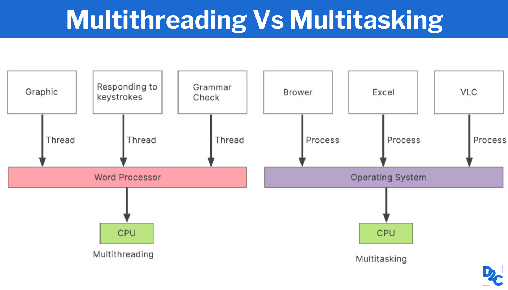

Vorlesung 3
Einführung
Am Anfang der Vorlesung haben wir uns nochmal mit den Sockets auseinander gesetzt. Sockets bilden eine plattformunabhängige standardisierte Schnittstelle (API) zwischen der Netzwerkprotokoll-Implementierung des Betriebssystems und der eigentlichen Anwendungssoftware. Hierfür haben wir uns ein paar Methoden durchgelesen und dessen Funktion besprochen.
Threads
Im nächsten Teil der Vorlesung haben wir uns mit Threads in Java beschäftigt. Wir haben sie bereits in unserem Programmiermodul behandelt, aber leider ist nicht viel davon hängen geblieben. Threads helfen dabei, mehrere Aufgaben gleichzeitig auszuführen.

Multithreading ist der Begriff, der hier in der Java-Programmierung verwendet wird, um mehrere Abfragen zu bearbeiten. Threads sind in Java Objekte und können mehrere Zustände haben. Dazu gehören die Zustände new, running, running und der Zustand blocked. In dem Zustand running will jeder Thread sein. Mit der Methode thread.start wird ein Thread lauffähig gemacht, so dass er für den Übergang in den Zustand running ausgewählt werden kann. Der Zustand blocked zeigt an, dass der Thread vorübergehend nicht ausführbar ist.
ChatServer
Mit unserem aufgefrischten Wissen über Threads und dem erlernten Wissen über Sockets programmierten wir einen Chat-Server. Dieses Chatprogramm baut ein Netzwerk auf, in dem Nachrichten über gepufferte Reader und Writer ausgetauscht werden können. Aufgabe war es, die folgenden Funktionen zu implementieren:
- Text mit Enter-Taste senden (Programm KeyListener) - Eigenen Namen vor ausgehende Nachrichten schreiben "Janis: ". - UTF-8 Zeichentabelle verwenden oder kodieren, dass Sonderzeichen korrekt sind.
Leider gab es einige Probleme mit dem KeyListener. Der erste Ansatz war, ihn in einer anderen Klasse zu implementieren. ber der KeyListener wollte einfach nicht zuhören und funktionierte nicht. Die Variante, die dann funktionierte, war die Verwendung eines KeyAdapters.

Ein großer Nachteil des Servers war natürlich, dass jeder User seinen Namen einfach ändern konnte. Somit war Identitätsdiebstahl ein häufig vorkommendes Phänomen.
Hier noch der Code für die Aufgabe:
package drittevorlesung3;
import java.awt.event.ActionEvent;
import java.awt.event.ActionListener;
import java.io.BufferedReader;
import java.io.IOException;
import java.io.InputStreamReader;
import java.io.PrintWriter;
import java.net.Socket;
import javax.swing.*;
import java.awt.*;
import java.awt.event.KeyEvent;
import java.awt.event.KeyListener;
public class EinfacherChatClientA {
JTextArea txtEingehend;
JTextField txtAusgehend;
JTextField txtUsername;
BufferedReader reader;
PrintWriter writer;
Socket sock;
public static void main(String[] args) {
EinfacherChatClientA client = new EinfacherChatClientA();
client.los();
}
public void los() {
// Frame
JFrame frame = new JFrame("Lächerlich einfacher Chat-Client");
JPanel hauptPanel = new JPanel();
// Textfeld für eingehende Kommunikation
txtEingehend = new JTextArea(15,20);
txtEingehend.setLineWrap(true);
txtEingehend.setWrapStyleWord(true);
txtEingehend.setEditable(false);
JScrollPane fScroller = new JScrollPane(txtEingehend);
fScroller.setVerticalScrollBarPolicy(ScrollPaneConstants.VERTICAL_SCROLLBAR_ALWAYS);
fScroller.setHorizontalScrollBarPolicy(ScrollPaneConstants.HORIZONTAL_SCROLLBAR_NEVER);
// Textfeld für ausgehende Kommunikation und Label
txtAusgehend = new JTextField(20);
JLabel lblUsername = new JLabel("Username: ");
txtUsername = new JTextField(20);
// Senden Button
JButton btnSenden = new JButton("Senden");
btnSenden.addActionListener(new SendenButtonListener());
// Elemente zum Panel hinzufügen
hauptPanel.add(lblUsername);
hauptPanel.add(txtUsername);
hauptPanel.add(fScroller);
hauptPanel.add(txtAusgehend);
hauptPanel.add(btnSenden);
// Netzwerkverbindung bereit machen
netzwerkEinrichten();
// Neuen Thread starten
Thread readerThread = new Thread(new EingehendReader());
readerThread.start();
frame.getContentPane().add(BorderLayout.CENTER, hauptPanel);
frame.setSize(400,500);
frame.setVisible(true);
frame.setDefaultCloseOperation(JFrame.EXIT_ON_CLOSE);
KeyPressedA pressed = new KeyPressedA();
frame.addKeyListener(pressed);
}
private void netzwerkEinrichten(){
try {
sock = new Socket("192.168.40.49", 5040);
InputStreamReader streamReader = new InputStreamReader(sock.getInputStream());
reader = new BufferedReader(streamReader);
writer = new PrintWriter(sock.getOutputStream());
System.out.println("Netzwerkverbindung steht");
} catch(IOException ex){
ex.printStackTrace();
System.out.println("Fehler bei der Netzwerkverbindung");
}
}
class SendenButtonListener implements ActionListener {
@Override
public void actionPerformed(ActionEvent e) {
try {
writer.println(txtUsername.getText() + ": " + txtAusgehend.getText());
writer.flush();
} catch(Exception ex){
ex.printStackTrace();
System.out.println("Fehler beim Senden");
}
txtAusgehend.setText("");
txtAusgehend.requestFocus();
}
}
class KeyPressedA implements KeyListener {
@Override
public void keyTyped(KeyEvent e) {
}
public void keyPressed(KeyEvent e)
{
if(e.getKeyCode() == KeyEvent.VK_ENTER)
System.exit(0);
try {
writer.println(txtUsername.getText() + ": " + txtAusgehend.getText());
writer.flush();
} catch(Exception ex){
ex.printStackTrace();
System.out.println("Fehler beim Senden");
}
txtAusgehend.setText("");
txtAusgehend.requestFocus();
}
@Override
public void keyReleased(KeyEvent e) {
}
}
class EingehendReader implements Runnable{
public void run() {
String nachricht;
try{
while ((nachricht = reader.readLine()) != null) {
System.out.println("gelesen: " + nachricht);
txtEingehend.append(nachricht + "\n");
}
} catch(Exception ex) {
ex.printStackTrace();
}
}
}
}
Und noch der Code für die textelesen Datei:
import java.io.BufferedReader;
import java.io.BufferedWriter;
import java.io.FileReader;
import java.io.FileWriter;
import java.io.IOException;
public class texteLesen {
public static void main(String[] args){
try {
BufferedReader reader = new BufferedReader(new FileReader("name.txt"));
BufferedWriter writer = new BufferedWriter(new FileWriter("name_dublikat.txt"));
String text;
while((text = reader.readLine()) != null){
writer.write(text);
writer.newLine();
}
reader.close();
writer.close();
} catch (IOException e) {
e.printStackTrace();
}
}
}